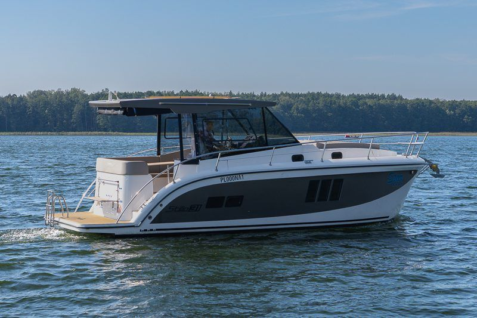

Czarter jachtów motorowych Mazury
Czarter jachtów motorowych na Mazurach pozwala zwiedzać jeziora swobodnie – wynajmij łódź i ruszaj na wodę.
Rejs pozwala zobaczyć region z zupełnie innej perspektywy. Każde jezioro odkrywa inne oblicze, a podróż po mazurskich jeziorach daje poczucie wolności, którego trudno doświadczyć w hotelu czy pensjonacie. Dla wielu osób to idealny sposób na aktywny wypoczynek na wodzie i kontakt z naturą, ale bez rezygnacji z wygody.


Dlaczego warto wybrać jacht motorowy zamiast tradycyjnej formy urlopu ?
Rejs pozwala zobaczyć region z zupełnie innej perspektywy. Każde jezioro odkrywa inne oblicze, a podróż po mazurskich jeziorach daje poczucie wolności, którego trudno doświadczyć w hotelu czy pensjonacie. Dla wielu osób to idealny sposób na aktywny wypoczynek na wodzie i kontakt z naturą, ale bez rezygnacji z wygody.
Nie trzeba być zawodowym sternikiem ani posiadać wieloletniego doświadczenia. Wiele jednostek można prowadzić nawet bez formalnych uprawnień, a czarter bez patentu jest dziś jedną z najczęściej wybieranych opcji przez turystów.
Czarter bez doświadczenia – jak wygląda rozpoczęcie rejsu?
Wiele osób obawia się pierwszego rejsu, ale w praktyce wszystko jest prostsze, niż się wydaje. Jeśli planujesz wynająć jednostkę, przed wypłynięciem zapewniamy szczegółowe szkolenie z obsługi, dzięki czemu nawet początkujący motorowodniak szybko poczuje się pewnie na pokładzie.
Taki start sprawia, że czarter jachtu motorowego na Mazurach jest dostępny praktycznie dla każdego, kto marzy o własnej przygodzie. Wystarczy chęć odkrywania nowych miejsc i odrobina ciekawości, by rozpocząć swój pierwszy rejs po szlaku Wielkich Jezior.
Dlaczego Mazury to jeden z najlepszych regionów do żeglugi ?
Według danych organizacji turystycznych region Wielkich Jezior Mazurskich oferuje ponad 200 kilometrów szlaków wodnych oraz setki kilometrów linii brzegowej. To sprawia, że obszar Wielkich Jezior Mazurskich należy do największych systemów jeziornych w Europie i jest idealnym miejscem dla turystyki motorowodnej i żeglarskiej.
Rosnąca popularność czarteru łodzi motorowych oraz jachtów żaglowych na Mazurach wynika również z faktu, że infrastruktura stale się rozwija – przybywa nowoczesnych marin, punktów serwisowych i miejsc do cumowania. Dla turystów oznacza to wygodniejsze planowanie trasy i większą dostępność atrakcji na jeziorach mazurskich.
Komfort i swoboda podróżowania po Wielkich Jeziorach
Podróżowanie jachtem to nie tylko przemieszczanie się z miejsca na miejsce, ale także wyjątkowy styl spędzania czasu. Na pokładzie jachtu można zjeść śniadanie z widokiem na wodę, popływać w spokojnej zatoce i zakończyć dzień przy zachodzie słońca.
Dla wielu osób taki wypoczynek to najlepszy możliwy pomysł na spędzenie czasu – bez tłumów, hałasu i sztywnego planu dnia. Możliwość wyboru tempa pływania, zatrzymywania się w dowolnym miejscu i odkrywania mniej znanych zakątków sprawia, że każdy czarter na Mazurach staje się wyjątkowy.
Wynajem jachtów motorowych – jak wygląda proces rezerwacji ?
Proces jest prosty i przejrzysty. Wystarczy wybrać termin, dopasować jednostkę do liczby osób w załodze i dokonać rezerwacji jachtów telefonicznie lub mailowo. Nasza wypożyczalnia pomaga dobrać odpowiedni model – od mniejszych jednostek, po większe jachty zapewniające pełen luksus.
Dla osób planujących wynajem łodzi lub wynajem jachtu przygotowujemy szczegółowe informacje dotyczące trasy, kosztów i przygotowania do podróży. Częstym pytaniem jest to, ile kosztuje czarter – odpowiedź zależy od modelu, sezonu i długości pobytu, dlatego zawsze przedstawiamy przejrzystą ofertę dopasowaną do potrzeb.
Czarter jako sposób na aktywny wypoczynek i niezapomniane przygody
Podróż po mazurskich szlakach wodnych to idealne połączenie relaksu i aktywności. Można żeglować, zwiedzać porty, korzystać z atrakcji nadbrzeżnych i odkrywać nowe miejsca każdego dnia. Taki czarter łodzi pozwala zaplanować trasę dokładnie tak, jak chcesz – bez pośpiechu i ograniczeń.
Jeśli marzysz o wakacjach pełnych wodnych przygód, wybierz czarter łodzi motorowych lub czarter jachtów motorowych i przekonaj się, jak wyjątkowy może być urlop na wodzie.
Zaplanuj swój rejs już dziś!
Mazury to miejsce stworzone do podróżowania wodą. Niezależnie od tego, czy interesuje Cię wynajem jachtu motorowego, łodzi na Mazurach czy rejs jednostką bez patentu, zespół jachtymazury.pl pomoże dobrać jednostkę i przygotować wszystko tak, abyś mógł skupić się wyłącznie na przyjemności z podróży.
Jeśli chcesz poczuć prawdziwą wolność i zobaczyć region z innej perspektywy – wynajmij jacht motorowy, zabierz bliskich i wyrusz w rejs po krainie Wielkich Jezior. Gwarantujemy, że po pierwszej wyprawie będziesz chciał wrócić na Mazury szybciej, niż zdążysz rozpakować torbę.
Wybrałeś termin?
Sprawdź, które jachty są wolne, albo zadzwoń do biura.